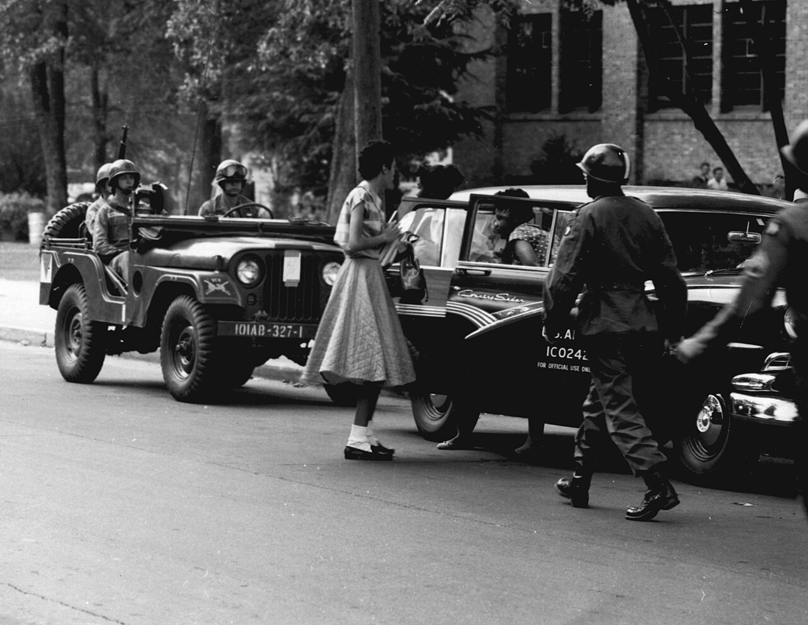
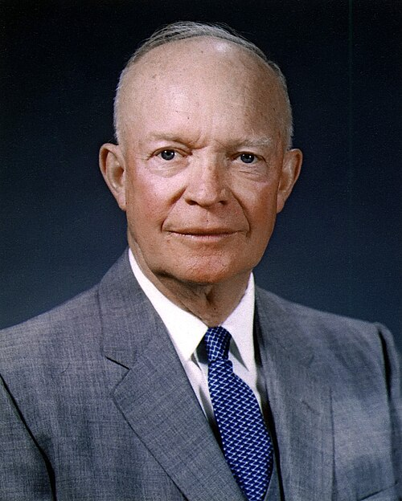
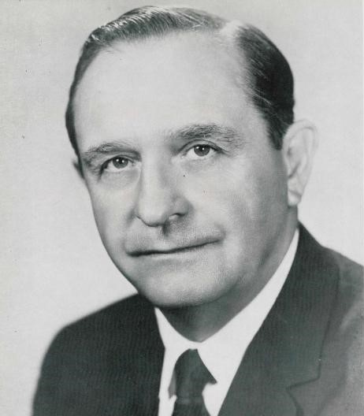
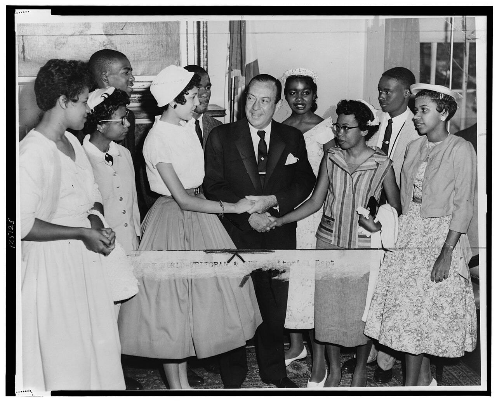
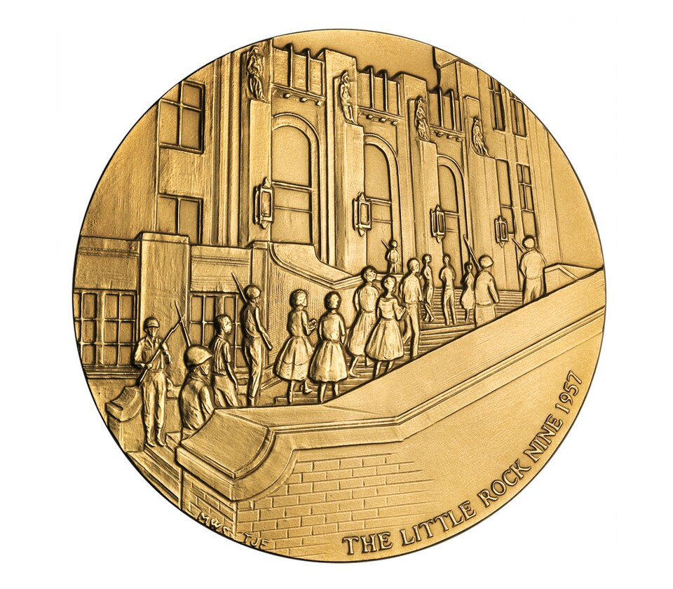
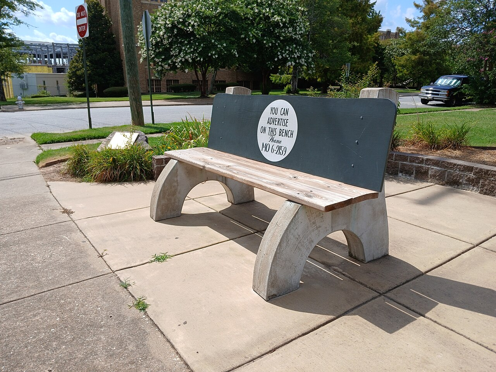
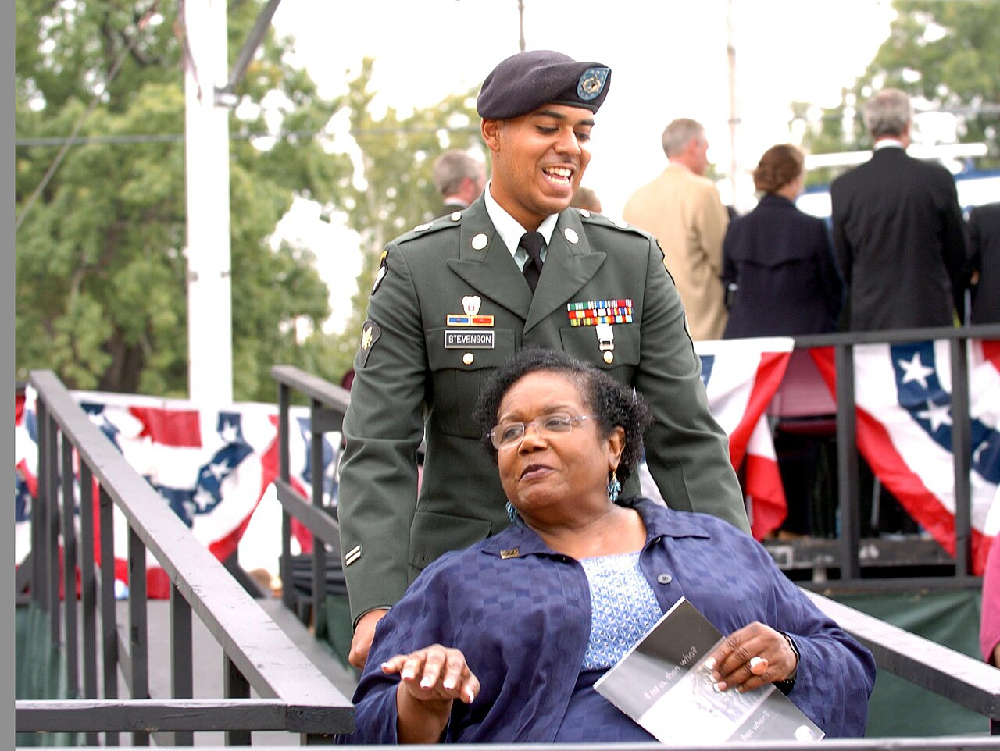
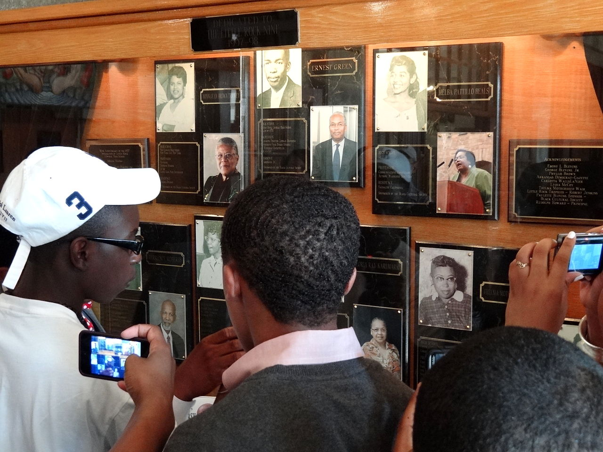

Little Rock, Arkansas
Little
Rock
Nine
Septembre 1957
- 17 mai 1954Brown v. Board of Education. La Cour suprême juge la ségrégation scolaire inconstitutionnelle.
- Trois ans plus tardDans le Sud, presque rien n'a bougé. Les États retardent, contournent, refusent.
- Rentrée 1957Neuf adolescents noirs s'inscrivent à Central High School, lycée blanc de près de 2 000 élèves.
Central High School aujourd'hui. Le lycée fonctionne toujours : c'est le seul établissement scolaire des États-Unis en activité à l'intérieur d'un site historique national.
Le climat : rassemblement ségrégationniste devant le Capitole de l'Arkansas.
2 → 25 septembre 1957
Vingt-trois jours
devant une porte
- 2 sept. Le gouverneur Orval Faubus déploie la Garde nationale d'Arkansas « pour maintenir l'ordre ». Elle bloque l'entrée.
- 4 sept. Elizabeth Eckford, 15 ans, n'a pas reçu le message : sa famille n'a pas le téléphone. Elle arrive seule, face à la foule.
- 23 sept. Les neuf entrent par une porte latérale. Plus de mille personnes se massent dehors ; la police les fait ressortir.
- 24 sept. Eisenhower fédéralise la Garde et envoie la 101e Division aéroportée.
- 25 sept. Escortés par les parachutistes, les neuf entrent en cours. Première journée complète.
La photographie qui fait le tour du monde : une adolescente, ses cahiers, et une foule derrière elle.

©1 200 parachutistes déployés. Chaque élève reçoit un garde personnel.

La loi de la foule ne peut pas l'emporter sur les décisions des tribunaux.Dwight D. Eisenhower · allocution radiotélévisée du 24 septembre 1957
« Mob rule cannot be allowed to override the decisions of our courts. »

Année scolaire 1957-1958
Entrer était le
plus facile
- 01Ernest GreenPremier diplômé noir de Central High, mai 1958
- 02Elizabeth EckfordSeule face à la foule, 4 septembre
- 03Jefferson Thomas
- 04Terrence Roberts
- 05Carlotta WallsLa plus jeune des neuf
- 06Minnijean BrownExpulsée en février 1958
- 07Gloria Ray
- 08Thelma Mothershed
- 09Melba Pattillo
- Tous les joursInsultes et crachats dans les couloirs. Bousculades dans les escaliers. De l'eau brûlante dans les douches.
- Les gardesIls ne pouvaient pas entrer partout : ni dans les vestiaires, ni dans les toilettes. C'est là que ça se passait.
- Février 1958Minnijean Brown est expulsée après avoir répondu à ses harceleuses. Aucun élève blanc ne l'a été.
Des cartons « One down… eight to go » circulent dans le lycée après son renvoi.

©Les neuf réunis, reçus à New York par le maire Robert Wagner. Entre 14 et 16 ans.
Ce que ça a changé
Un précédent
fédéral
Pour la première fois depuis la Reconstruction, un président envoie l'armée fédérale dans le Sud pour faire appliquer les droits civiques. Le message est clair : un État ne peut pas désobéir aux tribunaux.
- Mai 1958Ernest Green est diplômé de Central High. Martin Luther King est dans la salle.
- 1958-59« The Lost Year » : Faubus ferme tous les lycées de Little Rock plutôt que de les intégrer.
- 1998Central High devient site historique national.
- 1999Les neuf reçoivent la Médaille d'or du Congrès, remise par Bill Clinton.
Le changement n'est jamais facile. Il reste possible.

©La plus haute distinction civile décernée par le Congrès des États-Unis, 1999.
Ernest Green, Carlotta Walls LaNier et Terrence Roberts, des décennies plus tard.
Aujourd'hui
Le lieu se visite,
le lycée fonctionne
Sur le trottoir du 16e et Park Street, un banc rappelle celui où Elizabeth Eckford s'est assise le 4 septembre 1957, en attendant un bus, entourée par la foule.

©Le banc d'Elizabeth Eckford.

©La 101e escorte de nouveau Melba Pattillo Beals — cette fois pour une commémoration.

©Dans le lycée : chaque visage à 15 ans, et le même des décennies plus tard.